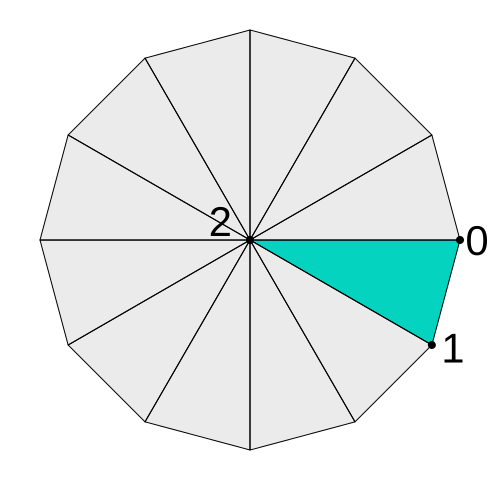

Cet article suppose que vous avez lu beaucoup des autres articles en commençant par les bases. Si vous ne les avez pas lus, veuillez commencer par là d’abord.
Dans l’article sur les plus petits programmes WebGL, nous avons couvert quelques exemples de dessin avec très peu de code. Dans cet article, nous allons voir comment dessiner sans données.
Traditionnellement, les applications WebGL mettent des données de géométrie dans des buffers. Elles utilisent ensuite des attributs pour extraire les données de sommets de ces buffers dans les shaders et les convertir en clip space.
Le mot traditionnellement est important. C’est seulement une tradition
de le faire ainsi. Ce n’est en aucun cas une obligation. WebGL se fiche
de comment nous le faisons, il se soucie seulement que nos vertex shaders
assignent des coordonnées en clip space à gl_Position.
Dans GLSL ES 3.0, il existe une variable spéciale, gl_VertexID,
disponible dans les vertex shaders. En pratique, elle compte les sommets.
Utilisons-la pour calculer des positions de sommets sans données.
Calculons les points d’un cercle en nous basant sur cette variable.
#version 300 es
uniform int numVerts;
#define PI radians(180.0)
void main() {
float u = float(gl_VertexID) / float(numVerts); // va de 0 à 1
float angle = u * PI * 2.0; // va de 0 à 2PI
float radius = 0.8;
vec2 pos = vec2(cos(angle), sin(angle)) * radius;
gl_Position = vec4(pos, 0, 1);
gl_PointSize = 5.0;
}
Le code ci-dessus devrait être assez simple.
gl_VertexID va compter de 0 jusqu’au nombre
de sommets que nous demandons de dessiner. Nous passerons ce même nombre
en tant que numVerts.
En nous basant sur cela, nous générons des positions pour un cercle.
Si nous nous arrêtions là, le cercle serait une ellipse car le clip space est normalisé (va de -1 à 1) horizontalement et verticalement sur le canvas. Si nous passons la résolution, nous pouvons prendre en compte que -1 à 1 horizontalement ne représente pas forcément le même espace que -1 à 1 verticalement sur le canvas.
#version 300 es
uniform int numVerts;
+uniform vec2 resolution;
#define PI radians(180.0)
void main() {
float u = float(gl_VertexID) / float(numVerts); // va de 0 à 1
float angle = u * PI * 2.0; // va de 0 à 2PI
float radius = 0.8;
vec2 pos = vec2(cos(angle), sin(angle)) * radius;
+ float aspect = resolution.y / resolution.x;
+ vec2 scale = vec2(aspect, 1);
+ gl_Position = vec4(pos * scale, 0, 1);
gl_PointSize = 5.0;
}
Et notre fragment shader peut simplement dessiner une couleur unie
#version 300 es
precision highp float;
out vec4 outColor;
void main() {
outColor = vec4(1, 0, 0, 1);
}
Dans notre JavaScript au moment de l’initialisation, nous allons compiler le shader et rechercher les uniforms,
// configurer le programme GLSL
const program = webglUtils.createProgramFromSources(gl, [vs, fs]);
const numVertsLoc = gl.getUniformLocation(program, 'numVerts');
const resolutionLoc = gl.getUniformLocation(program, 'resolution');
Et pour faire le rendu, nous utiliserons le programme,
définirons les uniforms resolution et numVerts, et dessinerons les points.
gl.useProgram(program);
const numVerts = 20;
// indiquer au shader le nombre de sommets
gl.uniform1i(numVertsLoc, numVerts);
// indiquer au shader la résolution
gl.uniform2f(resolutionLoc, gl.canvas.width, gl.canvas.height);
const offset = 0;
gl.drawArrays(gl.POINTS, offset, numVerts);
Et nous obtenons un cercle de points.
Cette technique est-elle utile ? Eh bien, avec du code créatif, nous pourrions faire un champ d’étoiles ou un simple effet de pluie avec presque aucune donnée et un seul appel de dessin.
Faisons la pluie juste pour voir que ça fonctionne. Tout d’abord, nous allons modifier le vertex shader en
#version 300 es
uniform int numVerts;
uniform float time;
void main() {
float u = float(gl_VertexID) / float(numVerts); // va de 0 à 1
float x = u * 2.0 - 1.0; // -1 à 1
float y = fract(time + u) * -2.0 + 1.0; // 1.0 -> -1.0
gl_Position = vec4(x, y, 0, 1);
gl_PointSize = 5.0;
}
Pour cette situation, nous n’avons pas besoin de la résolution.
Nous avons ajouté un uniform time qui sera le temps
en secondes depuis le chargement de la page.
Pour ‘x’, nous allons simplement aller de -1 à 1
Pour ‘y’, nous utilisons time + u mais fract retourne
seulement la partie fractionnaire, donc une valeur de 0.0 à 1.0.
En l’étendant à 1.0 à -1.0, nous obtenons un y qui se répète
dans le temps mais qui est décalé différemment pour chaque
point.
Changeons la couleur en bleu dans le fragment shader.
precision highp float;
out vec4 outColor;
void main() {
- outColor = vec4(1, 0, 0, 1);
+ outColor = vec4(0, 0, 1, 1);
}
Ensuite, en JavaScript, nous devons rechercher l’uniform time
// configurer le programme GLSL
const program = webglUtils.createProgramFromSources(gl, [vs, fs]);
const numVertsLoc = gl.getUniformLocation(program, 'numVerts');
-const resolutionLoc = gl.getUniformLocation(program, 'resolution');
+const timeLoc = gl.getUniformLocation(program, 'time');
Et nous devons convertir le code pour l’animer
en créant une boucle de rendu et en définissant l’uniform time.
+function render(time) {
+ time *= 0.001; // convertir en secondes
+ webglUtils.resizeCanvasToDisplaySize(gl.canvas);
+ gl.viewport(0, 0, gl.canvas.width, gl.canvas.height);
gl.useProgram(program);
const numVerts = 20;
// indiquer au shader le nombre de sommets
gl.uniform1i(numVertsLoc, numVerts);
+ // indiquer au shader le temps
+ gl.uniform1f(timeLoc, time);
const offset = 0;
gl.drawArrays(gl.POINTS, offset, numVerts);
+ requestAnimationFrame(render);
+}
+requestAnimationFrame(render);
Cela nous donne des POINTS qui descendent à l’écran mais ils sont tous dans l’ordre. Nous avons besoin d’ajouter un peu de hasard. Il n’y a pas de générateur de nombres aléatoires dans GLSL. À la place, nous pouvons utiliser une fonction qui génère quelque chose qui semble suffisamment aléatoire.
En voici une
// fonction de hachage de https://www.shadertoy.com/view/4djSRW
// étant donné une valeur entre 0 et 1
// retourne une valeur entre 0 et 1 qui *paraît* à peu près aléatoire
float hash(float p) {
vec2 p2 = fract(vec2(p * 5.3983, p * 5.4427));
p2 += dot(p2.yx, p2.xy + vec2(21.5351, 14.3137));
return fract(p2.x * p2.y * 95.4337);
}
et nous pouvons l’utiliser comme ceci
void main() {
float u = float(gl_VertexID) / float(numVerts); // va de 0 à 1
- float x = u * 2.0 - 1.0; // -1 à 1
+ float x = hash(u) * 2.0 - 1.0; // position aléatoire
float y = fract(time + u) * -2.0 + 1.0; // 1.0 -> -1.0
gl_Position = vec4(x, y, 0, 1);
gl_PointSize = 5.0;
}
Nous passons à hash notre précédente valeur de 0 à 1 et elle nous retourne
une valeur pseudo-aléatoire de 0 à 1.
Rendons aussi les points plus petits
gl_Position = vec4(x, y, 0, 1);
- gl_PointSize = 5.0;
+ gl_PointSize = 2.0;
Et augmentons le nombre de points que nous dessinons
-const numVerts = 20;
+const numVerts = 400;
Et avec cela nous obtenons
Si vous regardez vraiment de près, vous pouvez voir que la pluie se répète. Cherchez un groupe de points et regardez-les tomber en bas et réapparaître en haut. S’il se passait plus de choses en arrière-plan, comme si cet effet de pluie bon marché se produisait sur un jeu 3D, il est possible que personne ne remarque jamais qu’il se répète.
Nous pouvons corriger la répétition en ajoutant un peu plus d’aléatoire.
void main() {
float u = float(gl_VertexID) / float(numVerts); // va de 0 à 1
+ float off = floor(time + u) / 1000.0; // change une fois par seconde par sommet
- float x = hash(u) * 2.0 - 1.0; // position aléatoire
+ float x = hash(u + off) * 2.0 - 1.0; // position aléatoire
float y = fract(time + u) * -2.0 + 1.0; // 1.0 -> -1.0
gl_Position = vec4(x, y, 0, 1);
gl_PointSize = 2.0;
}
Dans le code ci-dessus, nous avons ajouté off. Comme nous appelons floor,
la valeur de floor(time + u) nous donnera effectivement
un minuteur secondaire qui ne change qu’une fois par seconde pour chaque sommet.
Ce décalage est synchronisé avec le code qui déplace le point vers le bas de l’écran
donc au même moment où le point revient en haut de l’écran,
une petite quantité est ajoutée à la valeur passée à hash, ce qui signifie que ce point particulier
va obtenir un nouveau nombre aléatoire et donc une nouvelle position horizontale aléatoire.
Le résultat est un effet de pluie qui ne semble pas se répéter
Peut-on faire plus que gl.POINTS ? Bien sûr !
Faisons des cercles. Pour ce faire, nous avons besoin de triangles autour d’un centre comme des parts de tarte. Nous pouvons penser à chaque triangle comme 2 points autour du bord de la tarte suivis de 1 point au centre. Nous répétons ensuite pour chaque part de la tarte.

Donc d’abord, nous voulons une sorte de compteur qui change une fois par part de tarte
int sliceId = gl_VertexID / 3;
Ensuite, nous avons besoin d’un compteur autour du bord du cercle qui suit ce schéma
0, 1, ?, 1, 2, ?, 2, 3, ?, ...
La valeur ? n’a pas vraiment d’importance car en regardant le diagramme ci-dessus, la 3ème valeur est toujours au centre (0,0) donc nous pouvons simplement multiplier par 0 quelle que soit la valeur.
Pour obtenir le schéma ci-dessus, ceci fonctionnerait
int triVertexId = gl_VertexID % 3;
int edge = triVertexId + sliceId;
Pour les points sur le bord vs les points au centre, nous avons besoin de ce schéma. 2 sur le bord puis 1 au centre, répéter.
1, 1, 0, 1, 1, 0, 1, 1, 0, ...
Nous pouvons obtenir ce schéma avec
float radius = step(1.5, float(triVertexId));
step(a, b) vaut 0 si a < b et 1 sinon. Vous pouvez le voir comme
function step(a, b) {
return a < b ? 0 : 1;
}
step(1.5, float(triVertexId)) sera 1 quand 1.5 est inférieur à triVertexId.
C’est vrai pour les 2 premiers sommets de chaque triangle et faux
pour le dernier.
Nous pouvons obtenir des sommets de triangles pour un cercle comme ceci
int numSlices = 8;
int sliceId = gl_VertexID / 3;
int triVertexId = gl_VertexID % 3;
int edge = triVertexId + sliceId;
float angleU = float(edge) / float(numSlices); // 0.0 à 1.0
float angle = angleU * PI * 2.0;
float radius = step(float(triVertexId), 1.5);
vec2 pos = vec2(cos(angle), sin(angle)) * radius;
Mettons tout cela ensemble et essayons simplement de dessiner 1 cercle.
#version 300 es
uniform int numVerts;
uniform vec2 resolution;
#define PI radians(180.0)
void main() {
int numSlices = 8;
int sliceId = gl_VertexID / 3;
int triVertexId = gl_VertexID % 3;
int edge = triVertexId + sliceId;
float angleU = float(edge) / float(numSlices); // 0.0 à 1.0
float angle = angleU * PI * 2.0;
float radius = step(float(triVertexId), 1.5);
vec2 pos = vec2(cos(angle), sin(angle)) * radius;
float aspect = resolution.y / resolution.x;
vec2 scale = vec2(aspect, 1);
gl_Position = vec4(pos * scale, 0, 1);
}
Remarquez que nous avons remis resolution pour ne pas obtenir une ellipse.
Pour un cercle à 8 parts, nous avons besoin de 8 * 3 sommets
-const numVerts = 400;
+const numVerts = 8 * 3;
et nous devons dessiner des TRIANGLES et non des POINTS
const offset = 0;
-gl.drawArrays(gl.POINTS, offset, numVerts);
+gl.drawArrays(gl.TRIANGLES, offset, numVerts);
Et si nous voulions dessiner plusieurs cercles ?
Tout ce que nous devons faire est de trouver un circleId que nous
pouvons utiliser pour choisir une position pour chaque cercle qui est
la même pour tous les sommets du cercle.
int numVertsPerCircle = numSlices * 3;
int circleId = gl_VertexID / numVertsPerCircle;
Par exemple, dessinons un cercle de cercles.
D’abord, transformons le code ci-dessus en une fonction,
vec2 computeCircleTriangleVertex(int vertexId) {
int numSlices = 8;
int sliceId = vertexId / 3;
int triVertexId = vertexId % 3;
int edge = triVertexId + sliceId;
float angleU = float(edge) / float(numSlices); // 0.0 à 1.0
float angle = angleU * PI * 2.0;
float radius = step(float(triVertexId), 1.5);
return vec2(cos(angle), sin(angle)) * radius;
}
Voici maintenant le code original que nous avons utilisé pour dessiner un cercle de points au début de cet article.
float u = float(gl_VertexID) / float(numVerts); // va de 0 à 1
float angle = u * PI * 2.0; // va de 0 à 2PI
float radius = 0.8;
vec2 pos = vec2(cos(angle), sin(angle)) * radius;
float aspect = resolution.y / resolution.x;
vec2 scale = vec2(aspect, 1);
gl_Position = vec4(pos * scale, 0, 1);
Nous devons simplement le modifier pour utiliser circleId à la place
de vertexId et diviser par le nombre de cercles
au lieu du nombre de sommets.
void main() {
+ int circleId = gl_VertexID / numVertsPerCircle;
+ int numCircles = numVerts / numVertsPerCircle;
- float u = float(gl_VertexID) / float(numVerts); // va de 0 à 1
+ float u = float(circleId) / float(numCircles); // va de 0 à 1
float angle = u * PI * 2.0; // va de 0 à 2PI
float radius = 0.8;
vec2 pos = vec2(cos(angle), sin(angle)) * radius;
+ vec2 triPos = computeCircleTriangleVertex(gl_VertexID) * 0.1;
float aspect = resolution.y / resolution.x;
vec2 scale = vec2(aspect, 1);
- gl_Position = vec4(pos * scale, 0, 1);
+ gl_Position = vec4((pos + triPos) * scale, 0, 1);
}
Ensuite, nous devons juste augmenter le nombre de sommets
-const numVerts = 8 * 3;
+const numVerts = 8 * 3 * 20;
Et maintenant nous avons un cercle de 20 cercles.
Et bien sûr, nous pourrions appliquer les mêmes techniques que nous avons faites ci-dessus pour créer une pluie de cercles. Cela n’a probablement aucun intérêt donc je ne vais pas le faire, mais cela montre qu’on peut créer des triangles dans le vertex shader sans données.
La technique ci-dessus pourrait être utilisée pour créer des rectangles ou des carrés à la place, puis générer des coordonnées UV, les passer au fragment shader et appliquer des textures sur notre géométrie générée. Cela pourrait être utile pour des flocons de neige ou des feuilles qui se retournent vraiment en 3D en appliquant les techniques 3D que nous avons utilisées dans les articles sur la perspective 3D.
Je veux souligner que ces techniques ne sont pas courantes. Créer un système de particules simple peut être semi-courant ou l’effet de pluie ci-dessus, mais faire des calculs extrêmement complexes nuira aux performances. En général, si vous voulez de la performance, vous devriez demander à votre ordinateur de faire le moins de travail possible, donc s’il y a beaucoup de choses que vous pouvez pré-calculer au moment de l’initialisation et les passer dans le shader sous une forme ou une autre, vous devriez le faire.
Par exemple, voici un vertex shader extrême qui calcule un tas de cubes (attention, son, du son).
En tant que curiosité intellectuelle du puzzle “Si je n’avais aucune donnée sauf un identifiant de sommet, pourrais-je dessiner quelque chose d’intéressant ?”, c’est assez sympa. En fait tout ce site porte sur le puzzle de : si vous n’avez qu’un identifiant de sommet, pouvez-vous faire quelque chose d’intéressant ? Mais, pour la performance, ce serait beaucoup, beaucoup plus rapide d’utiliser les techniques plus traditionnelles de passage de données de sommets de cubes dans des buffers et de lecture de ces données avec des attributs ou d’autres techniques que nous verrons dans d’autres articles.
Il y a un certain équilibre à trouver. Pour l’exemple de pluie ci-dessus, si vous voulez cet exact effet, alors le code ci-dessus est assez efficace. Quelque part entre les deux se trouve la limite où une technique est plus performante qu’une autre. Habituellement, les techniques plus traditionnelles sont aussi bien plus flexibles mais vous devez décider au cas par cas quand utiliser l’une ou l’autre.
L’objectif de cet article est principalement d’introduire ces idées
et de mettre en valeur d’autres façons de penser à ce que WebGL
fait réellement. Encore une fois, il se soucie seulement que vous définissiez gl_Position
et que vous sortiez une couleur dans vos shaders. Il se fiche de comment vous le faites.